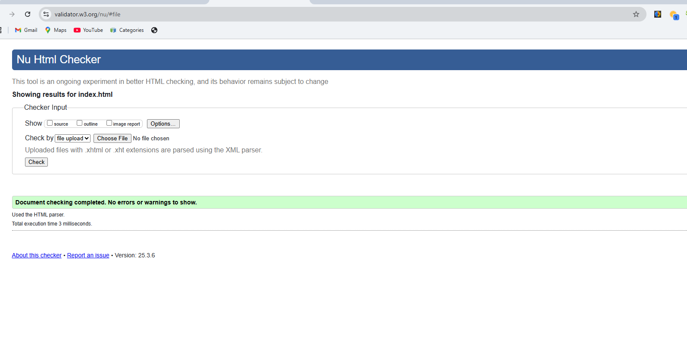
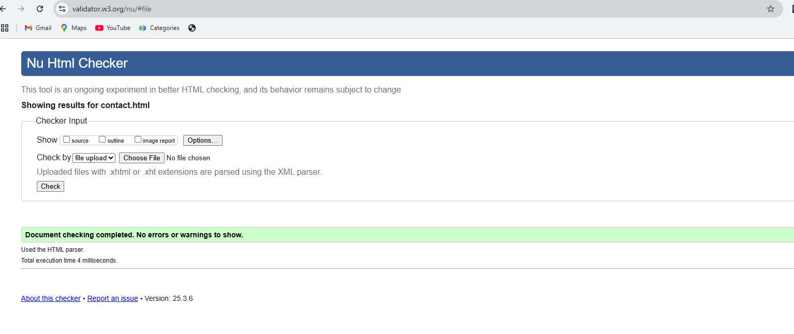
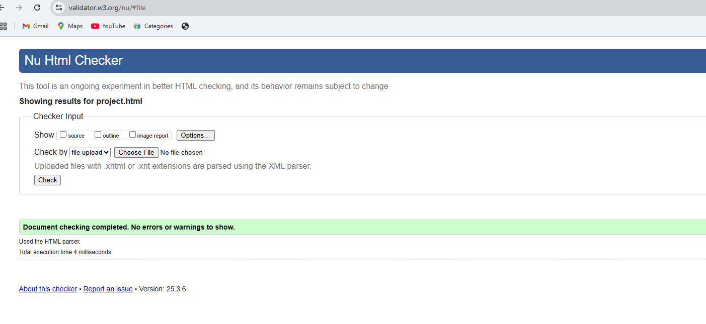
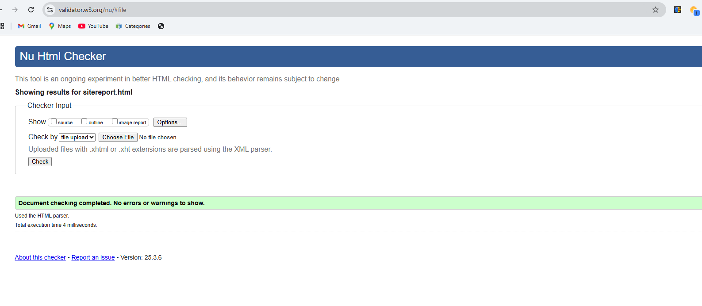
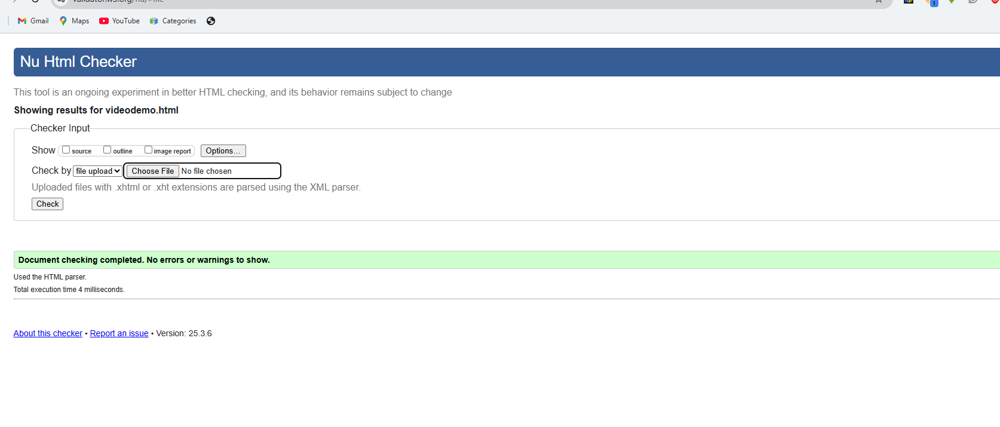
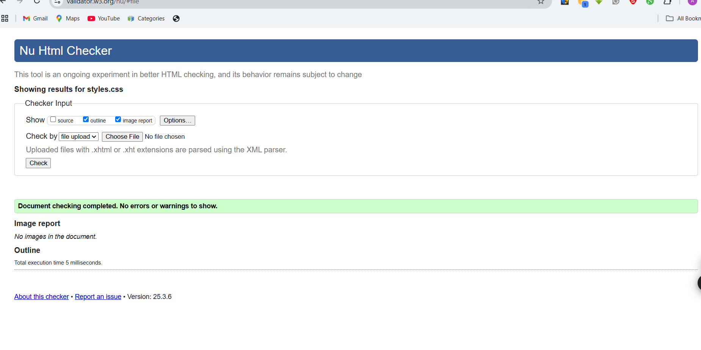

Site Report
Development Experience
Throughout the development of this portfolio website, I've had an enriching journey learning and implementing various web development concepts. The process began with planning the structure and layout of the website, followed by implementing the design using HTML and CSS.
One of the main challenges I faced was creating a responsive design that works seamlessly across different devices. I overcame this by using CSS Grid and Flexbox, along with media queries to ensure the website looks and functions well on all screen sizes.
The debugging process was particularly interesting, as it helped me understand the importance of writing clean and maintainable code. I used browser developer tools extensively to identify and fix styling issues and ensure proper layout across different browsers.
Reflective Discussion
This module has been instrumental in developing my understanding of web development fundamentals. Learning HTML and CSS has opened up new possibilities in creating visually appealing and functional websites.
The hands-on experience of building a portfolio website has helped me understand the importance of user experience and accessibility in web design. I've learned to think from the user's perspective while making design decisions.
The most valuable lesson has been understanding that web development is not just about writing code, but also about creating an engaging and user-friendly experience for visitors.
Design Decisions
The color scheme of the website was carefully chosen to create a professional and modern look. The primary color (#007bff) was selected for its association with trust and professionalism, while maintaining good contrast for accessibility.
I chose the 'Segoe UI' font family for its excellent readability and modern appearance. The typography hierarchy was established to guide users through the content effectively.
The layout was inspired by minimalist design principles, focusing on content clarity and ease of navigation. Some websites that influenced my design decisions include:
- Dribbble - for modern UI inspiration
- Behance - for portfolio layout ideas
- Material Design - for color and typography guidelines
Validation Reports
HTML Validation
    All HTML pages have been validated using the W3C Markup Validation Service and pass without errors.
CSS Validation
The CSS code has been validated using the W3C CSS Validation Service and passes all checks.
Video Demonstration
A comprehensive video demonstration of the website has been created to showcase its features and functionality. The video covers the development process, design decisions, and user interaction elements.
Watch Video Demonstration